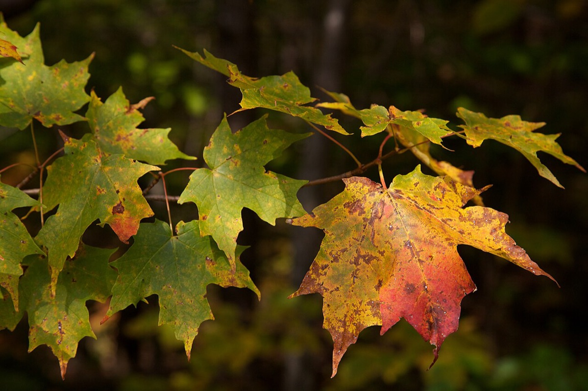
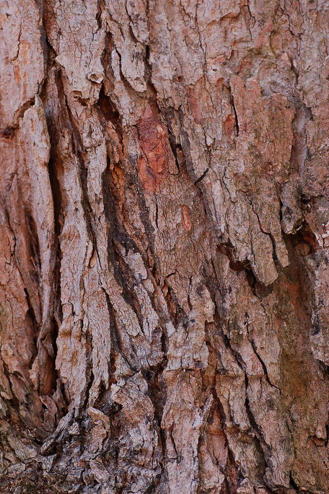
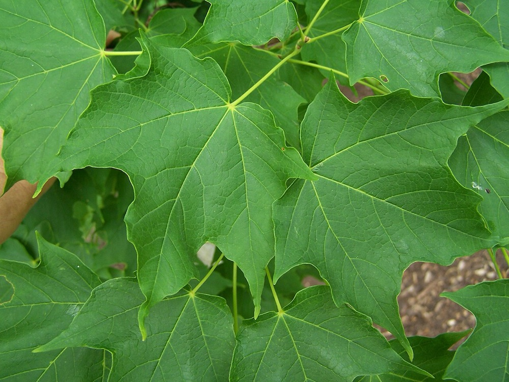

Sugar Maple
Acer saccharum
- Kind
- tree · Aceraceae
- Native to Vermont
- yes
- Legal status
- Native, abundant; no special legal status found. Sugarbush is a UVA enrollment subcategory. (checked 2026-10-30)
- Look-alikes
- Red maple; Black maple; Norway maple; Florida maple
Pictures



Names
Sugar maple, Acer saccharum. The tree of the sugarbush; see the Standards' Sugarbush subcategory in UVA Minimum Management and Plan Standards 2026.
Range and habitat
Native to North America. A medium to tall tree up to 100 feet with a very dense, elliptical crown (Virginia Tech). A leading tree of northern hardwood forest, which in Vermont is found below about 2,700 feet (seedling guide).
How to identify (by season; look-alikes and the key difference)
- Leaves: opposite, simple, 3 to 6 inches long, palmately veined with five rounded lobes and a smooth edge; green above, paler below.
- Look-alikes: red maple (toothed edge and 3 to 5 lobes), black maple, Norway maple and Florida maple. The factsheet lists these. See How to Identify Trees for the sugar-versus-red separation.
By growth stage (trees: seedling, sapling, pole-size, mature or old; what to look at in each)
| Stage | What to look at | What you see |
|---|---|---|
| Small seedling | leaf shape, edge, how they grow | Leaf shape incredibly variable, often without prominent lobes; infrequent, broad serrations; tends to grow in large clusters but can grow singly. Dense patches can hide seedlings of other species. |
| Larger seedling | leaf lobes, teeth | Three to five prominent lobes and coarse, large serrations. |
| Sapling and pole-size (about 4.5 feet tall to 10 inches DBH) | bark, twig, buds | Generally brown bark (the factsheet does not describe young bark separately); the twig and bud clues below. |
| Mature and old trees | bark, crown | Bark darker with furrows and long, thick, irregular ridges that curl outward at the edges; dense elliptical crown. |
| Winter, any age | twig, bud | Slender shiny brown twigs with pale lenticels; brown, very sharp-pointed terminal buds with tight scales. |
| Fruit (fall) | seeds | Paired horseshoe-shaped samaras, about 1 inch, brown when mature. |
Through the year
Dates are typical for Vermont and shift with elevation and year; "approximate" means the source gave a season and the dates are a translation of it.
| When | What | Look for | What to do | Dates |
|---|---|---|---|---|
| Apr 10 to May 15 | flower (identify) | Small, light yellow-green flowers hanging in clusters on slender stalks, opening in early spring with or just before the leaves. | - | approximate |
| Sep 15 to Oct 31 | seed-drop (identify) | Paired, horseshoe-shaped winged seeds (samaras) about 1 inch long, turning brown when mature in fall. | - | approximate |
| Nov 1 to Apr 10 | dormant (identify) | Opposite twigs that are slender, shiny and brown with paler lenticels, ending in brown, very sharp-pointed buds with tight scales; bark darkened and furrowed in older trees. | - | approximate |
Signs on the land (tracks, scat, browse, nests, holes, calls)
Not described in the sources read.
Role in the forest (what it eats, what eats it, what it needs)
Maple twigs and leaves are key deer foods (White-tailed Deer); in winter moose strip bark from red, mountain and striped maples (Moose).
What helps it thrive (light, soil, shelter, food and the trees it uses)
- Light: very shade tolerant; it persists for long periods under a dense canopy and quickly occupies gaps. Seedlings and saplings typically respond vigorously and rapidly to release. After a first shelterwood cut, the residual canopy should admit about 40 percent light (FEIS).
- Soil and water: grows best on deep, moist, fertile, well-drained soils (sand to loam) with a pH of 5.5 to 7.3; intolerant of flooded soils and grows poorly on dry, shallow ones. In New England it grows up to about 2,500 feet, in level areas and in coves and sheltered lower slopes.
- Regeneration: the minimum seed-bearing age is 30 to 40 years; good seed crops come at intervals of one to five years depending on the region. Seedlings can survive for long periods suppressed under a canopy.
- What it grows with, and who browses it: a prominent part of mesic and northern hardwood forests with beech, birch and basswood; browsed by deer, moose and snowshoe hare (White-tailed Deer, Moose).
Managing for it (habitat practices) and living with it (conflicts and damage)
Not recorded here: silvicultural guidance for sugar maple belongs in the practices notes (see the forest management reference) and in the forester's plan.
Legal status
No special status found.
Sources
- Virginia Tech Dendrology, Sugar maple: https://dendro.cnre.vt.edu/dendrology/syllabus/factsheet.cfm?ID=2 (read 2026-10-30)
- J. Robertson and J. Truong, A Guide to the Seedlings of New England (FEMC, 2021): https://www.uvm.edu/femc/attachments/project/999/seedling_guide-compressed_1.pdf
- USDA Forest Service, Fire Effects Information System, Acer saccharum: https://www.fs.usda.gov/database/feis/plants/tree/acesac/all.html (read through a summarizing fetch 2026-11-01)
What this page is based on
Kind of source: mixed (leaf, twig, bud, bark and fruit from the Virginia Tech factsheet; seedling and sapling from the New England seedling guide)
What was read: Virginia Tech Dendrology factsheet (ID 2) for sugar maple, read through a summarizing fetch on 2026-10-30, and the sugar maple pages of A Guide to the Seedlings of New England (read as text). The factsheet gives no habitat, no sex of flowers, no young-bark description and no fall color. Calendar windows translate 'early spring', 'fall' and 'winter'. Silvics of North America and the Vermont sugar maple (sugarbush) management guides were not read. Habitat needs (light, soil, regeneration, response to cutting) added 2026-11-01 from the USDA Forest Service Fire Effects Information System species review (summarizing fetch); the review is national in scope and the Northeast details are those it names.
Last checked: 2026-10-30
Vermont Woodland Owner's Reference, built 2026-11-09. Rules and dates here are summaries, not legal advice; dates shift with elevation and year. Photo and recording credits · The text is by Loop Works, CC BY 4.0 (pictures and recordings keep their own licenses) · Note: _reference/US-VT/Species/Sugar Maple.md